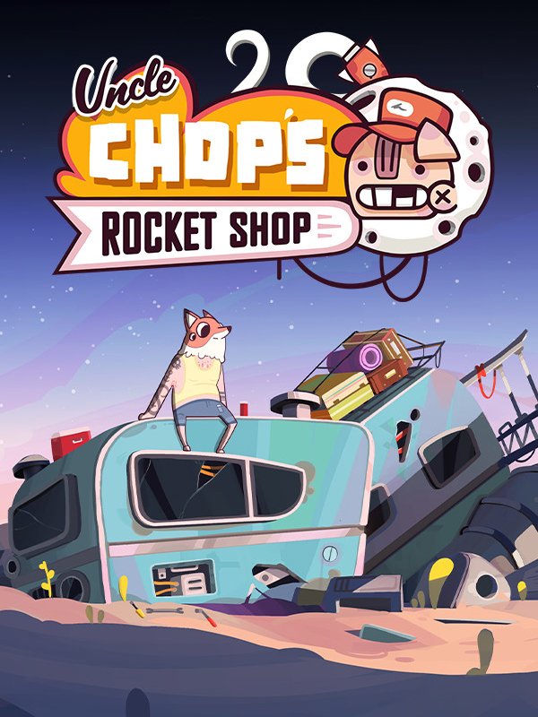

Uncle Chop's Rocket Shop
Uncle Chop's Rocket Shop
Details
|  | |
| Playtime | 20h 31m 0s |
| Last Activity | 2025-03-19 0:20:12 |
| Added | 2025-02-06 22:55:28 |
| Modified | 2025-10-02 10:02:14 |
| Completion Status | Completed |
| Library | Steam |
| Source | Steam |
| Platform | PC (Windows) |
| Release Date | 2024-12-05 |
| Community Score | |
| Critic Score | |
| User Score | |
| Genre | Indie Puzzle Simulator |
| Developer | Beard Envy |
| Publisher | Kasedo Games |
| Feature | Single Player |
| Links | Steam Official Website Epic Discord Twitch Nintendo Playstation |
| Tag | 2D Adventure Atmospheric Choices Matter Crafting Dark Humor Dystopian Lore-Rich Management Multiple Endings Narrative Puzzle Roguelike Roguelite Satire Simulation Singleplayer Spaceships Story Rich Surreal |
Description
On an asteroid-bound service station in an unfrequented space lane, Wilbur carves out a paltry living as a mechanic, repairing as many ships as he can to afford the ever-rising R.E.N.T payments to his corporate overlord, Uncle Chop. Where most of his customers find meaning in pastimes like worshipping deranged space gods, feeding random crap to a sentient black hole, endlessly digging for The Treasure™ or mentally enslaving donut shop workers, Wilbur lives a more humble life, fixing the galaxy’s ills one broken ship module at a time.


Fix Stuff
Using a range of tools, diagnostic devices, parts and workshop appliances, you’ll be correcting faults in the modules of procedurally generated spaceships. From simple refuel jobs to total overhauls, get ready to frantically fumble, slice, loosen, tighten, grab and drop as you try to complete as many jobs as you can within each daily time limit. With a huge variety of ships and modules, your hands are gonna get real dirty real fast, in some real unusual places.Read Stuff
Flaunt your basic literacy by consulting manual pages for guidance on diagnosing and correcting faults in spaceship modules, as well as operating workshop appliances. And if basic literacy isn’t your bag, then at least you’ve got pretty diagrams to gawp at! All your IKEA furniture-assembly training has led to this moment.Upgrade Stuff
Using whatever hard-earned pennies Uncle Chop doesn’t take from you, expand your workshop and kit it out with a range of workstations. From industrial devices to esoteric altars, these workstations will allow you to fix bigger and more lucrative ships.Talk About Stuff
Interact with a diverse range of oddballs as you engage with both anthology-style storytelling and a multiple-ending, overarching narrative. The lore is (*consults notes*) ‘deep and rich and good’, with different factions you can choose to ingratiate yourself with – each with their own inane agendas.Discover Stuff
Narrative and random events, hidden puzzles and upgrades, secret lore – we got all that goodness that ensures each day and gameplay run will feel substantially different from the last.Do All That Stuff Again, but Better
Meeting those escalating R.E.N.T payments ain’t gonna be easy, but chin up, champ – certain station upgrades will persist across gameplay runs, making life a little more tolerable every time around. You’ll also get faster and smarter the more you do the thing, so keep doing the thing!